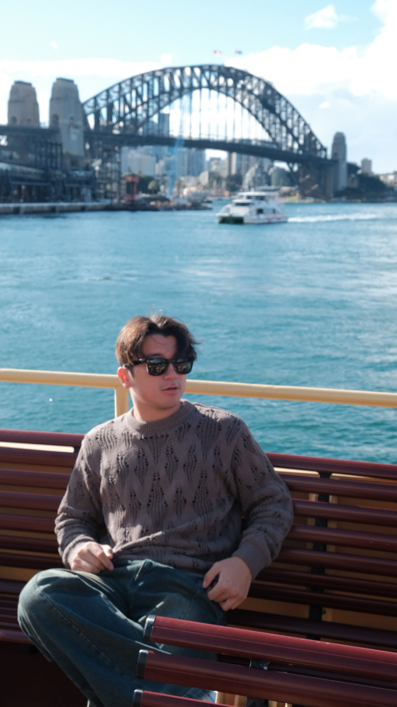
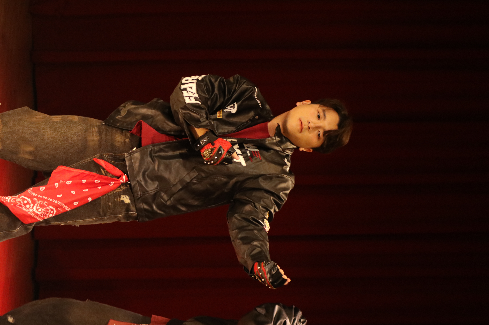
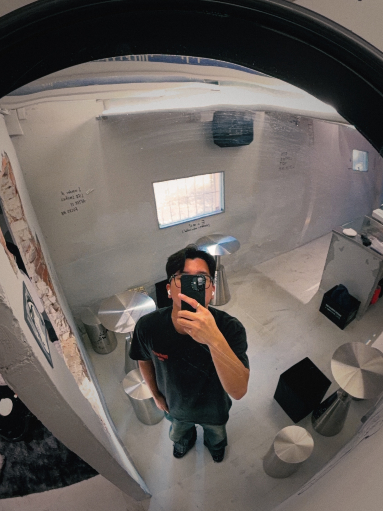

Personal field notes · 2026
嗨，我是
樂。
一個正在學習成為醫生，也努力把生活過得有趣的人。
01 / About me
保持好奇，
也保持開朗。
大家好，我叫樂，目前就讀中國醫藥大學醫學系二年級，畢業於建國中學和中正國中。
我的個性外向開朗，喜歡和大家聊天，也喜歡跳舞、去咖啡廳，很高興認識你們！
ENFPMBTI personality
02Year of medical school
∞Curiosity level
02 / What moves me
我的生活切片
課本之外，還有很多讓日子發光的小事。
- 排球01 / PLAY
- 電玩02 / PLAY
- 音樂03 / LISTEN
- 旅行04 / GO
- 跳舞05 / MOVE
- 咖啡廳06 / PAUSE
03 / Little moments
生活有節拍，
也有香氣。
在喜歡的事情裡，留下屬於自己的節奏。

